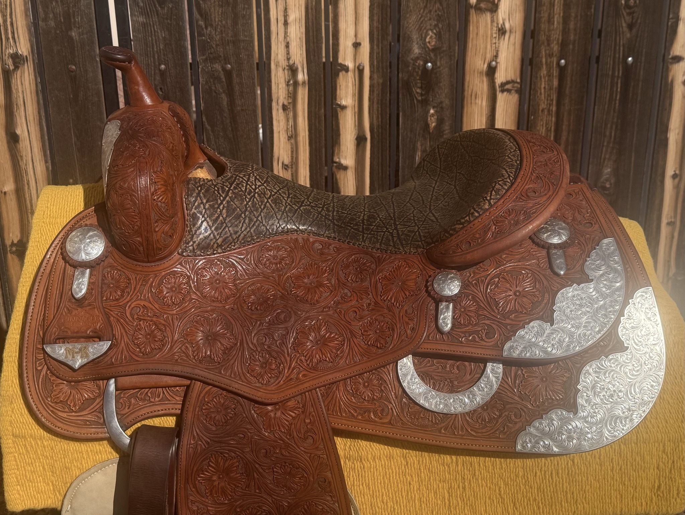
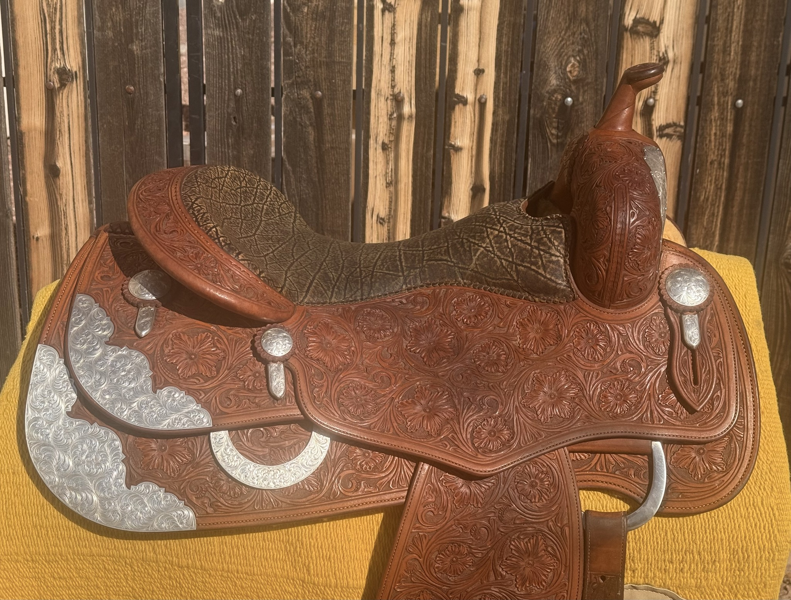
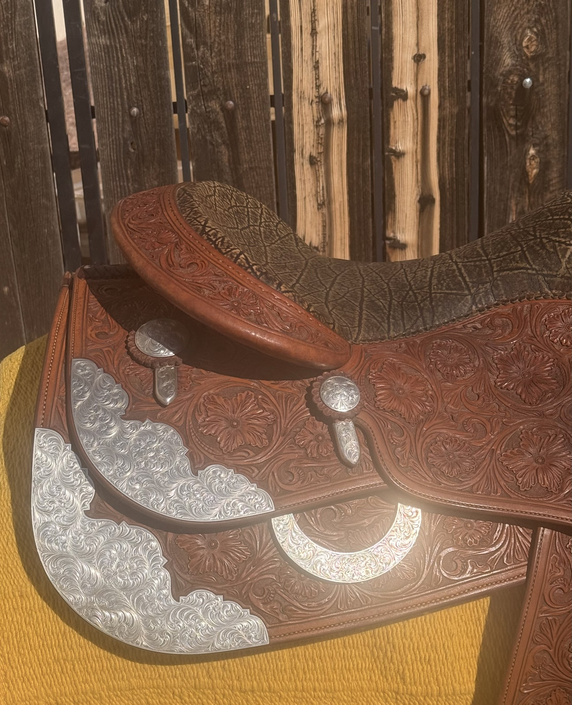
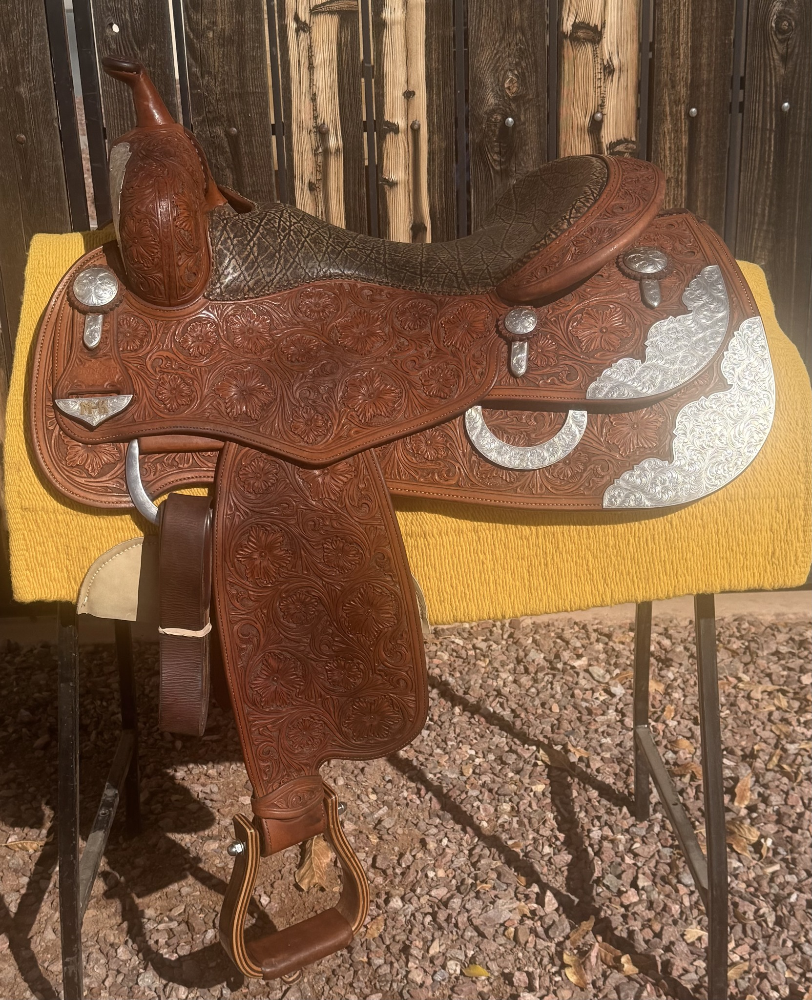
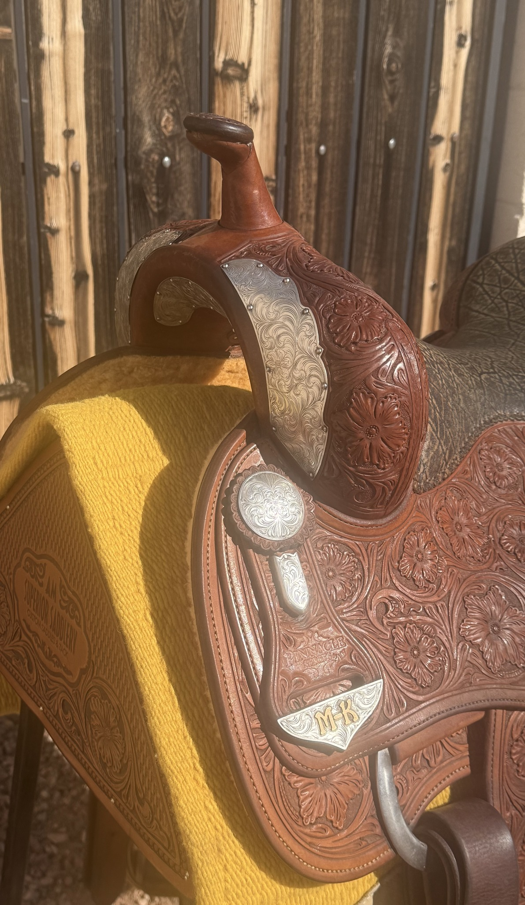
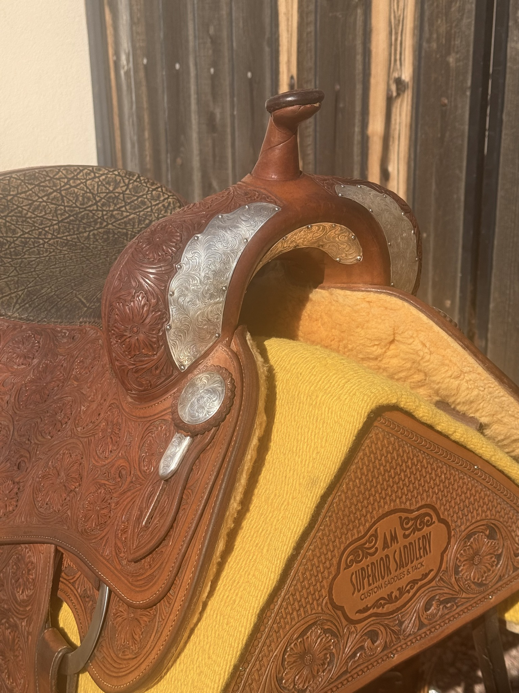
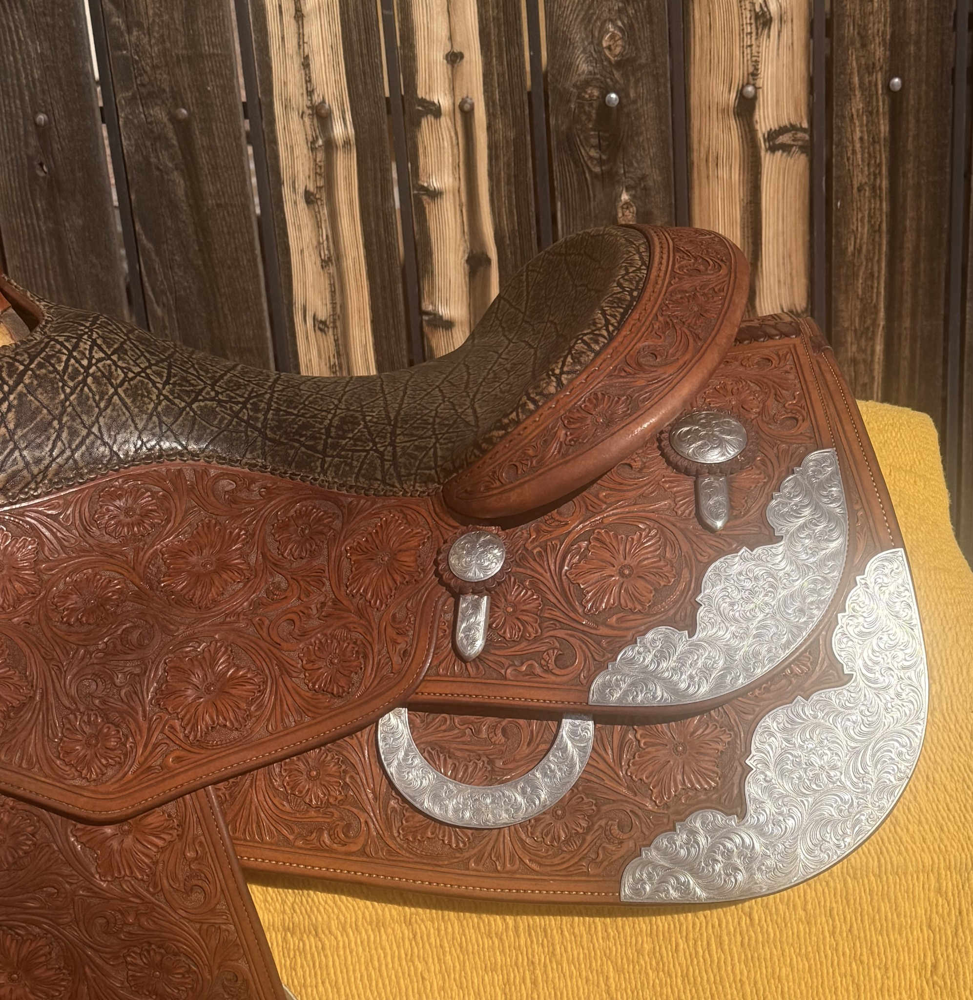

AF Reiner by Pinnacle Saddlery — 16" Elephant Seat, Full Silver
$5,995
| Maker | Pinnacle Saddlery / Andreas Maschke (AM Superior Saddlery) |
|---|---|
| Model | AF Reiner |
| Seat Size | 16" |
| Tree Width | Contact for fit details |
| Leather | Chestnut/mahogany |
| Tooling | Full daisy/sunflower floral — head to toe |
| Seat | Elephant-print insert |
| Silver | Sterling silver corner plates, swell plates (both sides), engraved rear dees, round engraved conchos with pendant keepers |
The AF Reiner built by Andreas Maschke through Pinnacle Saddlery represents some of the finest hand tooling in the reining saddle market. The dense daisy/sunflower floral pattern covers every surface — swell, skirt, fender, and jockey — with the kind of tight, consistent detail that takes years of skilled work to achieve. The AM Superior Saddlery stamp on the rear housing confirms the provenance.
The silver package is exceptional: large engraved sterling silver corner plates dominate the skirt, matched by full swell plates on both sides of the fork, engraved rear dees, and round engraved conchos with pendant keepers. A custom gold-inlaid "M-B" nameplate in silver sits below the "PINNACLE" fender stamp — a personal touch from the original owner. The elephant-print seat insert provides excellent grip. Contact David to discuss tree width fit for your horse.
Shipping available. David ships nationwide. Contact for a quote to your zip code.
Inspected & certified by David Solum — 40+ years in reining saddles
Inquire About This Saddle